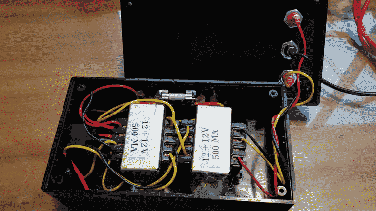
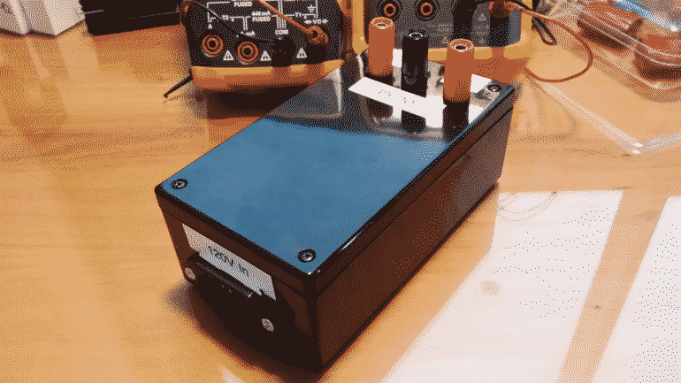

Low Power 120V+240V Isolation Transformer
2014-07-02
Since I was tired of using the flash circuit hack (my version) to power my tube experiments I finally decided to build a isolation transformer using two identical step-down transformers as suggested by Mike in his nixie clock documentation. Here are some photos of it:
|
 View of the inside with the transformers back-to-back
|
 Outside of the case with banana jacks and labels
|


I'm planing to build a adjustable HV lab power supply in the future (which I may sell as a kit), so stay tuned.
This article was imported from my old blog . Some things may be broken.